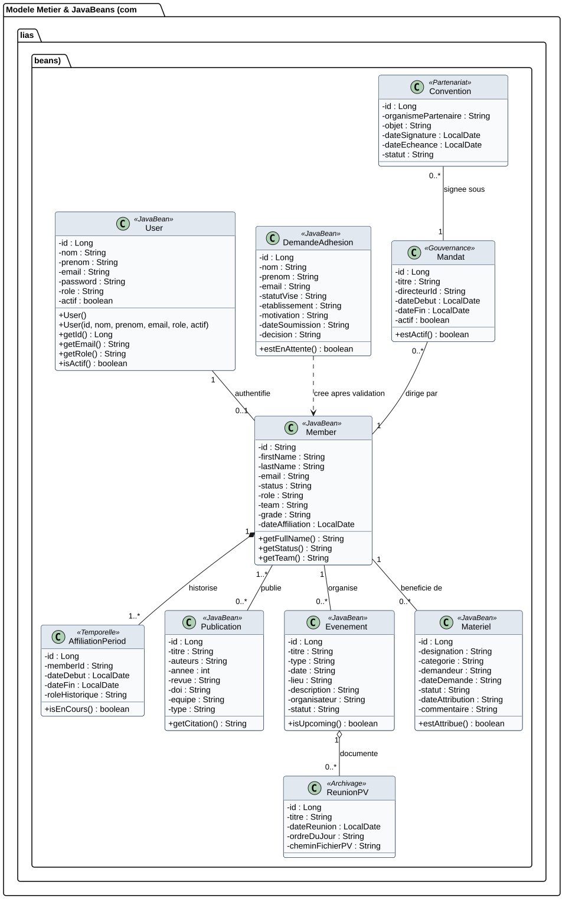
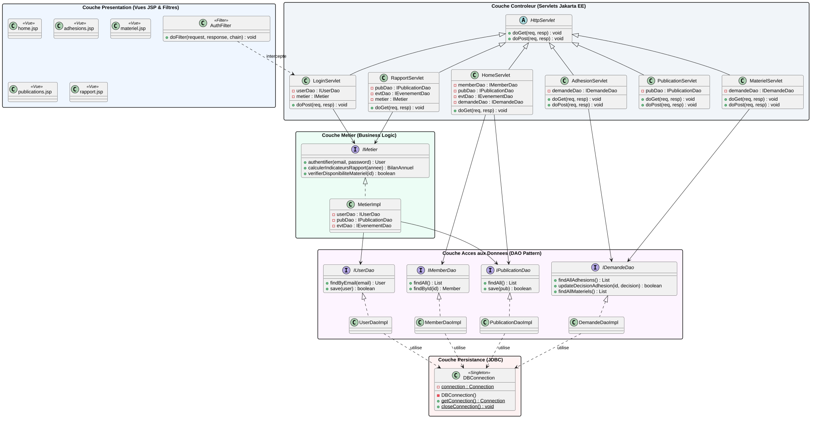

يمثل مخطط الأصناف (Diagramme de Classes) حجر الزاوية في هندسة البرمجيات الكائنية (Conception Orientée Objet). في هذا المشروع الأكاديمي، ينقسم التصميم الهيكلي إلى مستويين متكاملين تماماً وفق أرقى معايير الـ JEE: 1. مخطط أصناف المجال المهني (Modèle de Domaine & JavaBeans) الذي يُجسد كيانات المختبر وعلاقاتها الزمنية، و 2. مخطط المعمارية البرمجية (Architecture Logicielle MVC 2) الذي يوضح الفصل الصارم بين طبقات العرض والتحكم والمنطق وقواعد البيانات.
كيف تم اشتقاق هذا المخطط؟ (Traçabilité : Scénarios ⟶ Entités Métier ⟶ Classes) :
لم يتم بناء هذا المخطط من فراغ أو بالاقتصار على كود المشروع الحالي، بل طُبقت منهجية الهندسة البرمجية خطوة بخطوة:
AffiliationPeriod و Mandat و ReunionPV) لضمان تغطية 100% لمتطلبات المختبر المؤسساتية.User و Member).AffiliationPeriod).يصف هذا المخطط الكائنات الحقيقية في منظومة المختبر (Entités Métier) والحقول (Attributs) والروابط (Associations) ودرجات التعددية (Multiplicités / Cardinalités):

@startuml
skinparam classAttributeIconSize 0
skinparam defaultFontName Arial
skinparam roundcorner 8
skinparam shadowing false
skinparam class {
BackgroundColor #F8FAFC
BorderColor #152B44
HeaderBackgroundColor #E2E8F0
}
package "Modele Metier & JavaBeans (com.lias.beans)" {
class User <<JavaBean>> {
- id : Long
- nom : String
- prenom : String
- email : String
- password : String
- role : String
- actif : boolean
+ User()
+ User(id, nom, prenom, email, role, actif)
+ getId() : Long
+ getEmail() : String
+ getRole() : String
+ isActif() : boolean
}
class Member <<JavaBean>> {
- id : String
- firstName : String
- lastName : String
- email : String
- status : String
- role : String
- team : String
- grade : String
- dateAffiliation : LocalDate
+ getFullName() : String
+ getStatus() : String
+ getTeam() : String
}
class AffiliationPeriod <<Temporelle>> {
- id : Long
- memberId : String
- dateDebut : LocalDate
- dateFin : LocalDate
- roleHistorique : String
+ isEnCours() : boolean
}
class Mandat <<Gouvernance>> {
- id : Long
- titre : String
- directeurId : String
- dateDebut : LocalDate
- dateFin : LocalDate
- actif : boolean
+ estActif() : boolean
}
class Publication <<JavaBean>> {
- id : Long
- titre : String
- auteurs : String
- annee : int
- revue : String
- doi : String
- equipe : String
- type : String
+ getCitation() : String
}
class Evenement <<JavaBean>> {
- id : Long
- titre : String
- type : String
- date : String
- lieu : String
- description : String
- organisateur : String
- statut : String
+ isUpcoming() : boolean
}
class DemandeAdhesion <<JavaBean>> {
- id : Long
- nom : String
- prenom : String
- email : String
- statutVise : String
- etablissement : String
- motivation : String
- dateSoumission : String
- decision : String
+ estEnAttente() : boolean
}
class Materiel <<JavaBean>> {
- id : Long
- designation : String
- categorie : String
- demandeur : String
- dateDemande : String
- statut : String
- dateAttribution : String
- commentaire : String
+ estAttribue() : boolean
}
class ReunionPV <<Archivage>> {
- id : Long
- titre : String
- dateReunion : LocalDate
- ordreDuJour : String
- cheminFichierPV : String
}
class Convention <<Partenariat>> {
- id : Long
- organismePartenaire : String
- objet : String
- dateSignature : LocalDate
- dateEcheance : LocalDate
- statut : String
}
}
User "1" -- "0..1" Member : authentifie
Member "1" *-- "1..*" AffiliationPeriod : historise
Mandat "0..*" -- "1" Member : dirige par
Member "1..*" -- "0..*" Publication : publie
Member "1" -- "0..*" Evenement : organise
Member "1" -- "0..*" Materiel : beneficie de
DemandeAdhesion ..> Member : cree apres validation
Evenement "1" o-- "0..*" ReunionPV : documente
Convention "0..*" -- "1" Mandat : signee sous
@enduml
User) مخصص فقط للولوج وحفظ كلمة المرور والدور (RBAC).admin) لديه حساب أمني ولكنه ليس باحثاً أكاديمياً (Member = 0).actif = false) بينما يبقى ملفه الأكاديمي ومنشوراته محفوظة بالكامل.AffiliationPeriod) أن تعيش دون عضو يملكها. حذف العضو يمحو فتراته.dateFin = null يدل على أن الفترة ما تزال سارية حتى اللحظة.Mandat) ترتبط بعضو دائم (Member) يمثل المدير في تلك الفترة.Convention) تُوقع تحت مظلة مأمورية محددة للتوثيق القانوني والميزاني.يوضح هذا المخطط الهيكلي البرمجي كيفية تطبيق أنماط التصميم القياسية لبيئة Jakarta EE / Java EE، وتوزيع الفئات والواجهات البرمجية عبر الحزم (Packages) الرسمية:

@startuml
skinparam defaultFontName Arial
skinparam roundcorner 8
skinparam shadowing false
skinparam packageStyle rectangle
package "Couche Presentation (Vues JSP & Filtres)" #EFF6FF {
class AuthFilter <<Filter>> {
+ doFilter(request, response, chain) : void
}
class "home.jsp" as HomeJSP <<Vue>>
class "adhesions.jsp" as AdhesionJSP <<Vue>>
class "materiel.jsp" as MatJSP <<Vue>>
class "publications.jsp" as PubJSP <<Vue>>
class "rapport.jsp" as RapportJSP <<Vue>>
}
package "Couche Controleur (Servlets Jakarta EE)" #F1F5F9 {
abstract class HttpServlet {
+ doGet(req, resp) : void
+ doPost(req, resp) : void
}
class HomeServlet {
- memberDao : IMemberDao
- pubDao : IPublicationDao
- evtDao : IEvenementDao
- demandeDao : IDemandeDao
+ doGet(req, resp) : void
}
class LoginServlet {
- userDao : IUserDao
- metier : IMetier
+ doPost(req, resp) : void
}
class AdhesionServlet {
- demandeDao : IDemandeDao
+ doGet(req, resp) : void
+ doPost(req, resp) : void
}
class MaterielServlet {
- demandeDao : IDemandeDao
+ doGet(req, resp) : void
+ doPost(req, resp) : void
}
class PublicationServlet {
- pubDao : IPublicationDao
+ doGet(req, resp) : void
+ doPost(req, resp) : void
}
class RapportServlet {
- pubDao : IPublicationDao
- evtDao : IEvenementDao
- metier : IMetier
+ doGet(req, resp) : void
}
HttpServlet <|-- HomeServlet
HttpServlet <|-- LoginServlet
HttpServlet <|-- AdhesionServlet
HttpServlet <|-- MaterielServlet
HttpServlet <|-- PublicationServlet
HttpServlet <|-- RapportServlet
}
package "Couche Metier (Business Logic)" #ECFDF5 {
interface IMetier {
+ authentifier(email, password) : User
+ calculerIndicateursRapport(annee) : BilanAnnuel
+ verifierDisponibiliteMateriel(id) : boolean
}
class MetierImpl {
- userDao : IUserDao
- pubDao : IPublicationDao
- evtDao : IEvenementDao
}
IMetier <|.. MetierImpl
}
package "Couche Acces aux Donnees (DAO Pattern)" #FDF4FF {
interface IUserDao {
+ findByEmail(email) : User
+ save(user) : boolean
}
interface IMemberDao {
+ findAll() : List
+ findById(id) : Member
}
interface IPublicationDao {
+ findAll() : List
+ save(pub) : boolean
}
interface IDemandeDao {
+ findAllAdhesions() : List
+ updateDecisionAdhesion(id, decision) : boolean
+ findAllMateriels() : List
}
class UserDaoImpl
class MemberDaoImpl
class PublicationDaoImpl
class DemandeDaoImpl
IUserDao <|.. UserDaoImpl
IMemberDao <|.. MemberDaoImpl
IPublicationDao <|.. PublicationDaoImpl
IDemandeDao <|.. DemandeDaoImpl
}
package "Couche Persistance (JDBC)" #FEF2F2 {
class DBConnection <<Singleton>> {
- {static} connection : Connection
- DBConnection()
+ {static} getConnection() : Connection
+ {static} closeConnection() : void
}
}
AuthFilter ..> LoginServlet : intercepte
HomeServlet --> IMemberDao
HomeServlet --> IPublicationDao
LoginServlet --> IMetier
AdhesionServlet --> IDemandeDao
MaterielServlet --> IDemandeDao
RapportServlet --> IMetier
MetierImpl --> IUserDao
MetierImpl --> IPublicationDao
UserDaoImpl ..> DBConnection : utilise
MemberDaoImpl ..> DBConnection : utilise
PublicationDaoImpl ..> DBConnection : utilise
DemandeDaoImpl ..> DBConnection : utilise
@enduml
IMemberDao تفصل كود الأعمال عن تفاصيل SQL.PreparedStatement) لمنع حقن SQL.new من خارج الصنف.getConnection() تضمن مشاركة نقطة الاتصال بكفاءة عالية.com.mysql.cj.jdbc.Driver داخل كتلة ساكنة (static block) مرة واحدة عند إقلاع الخادم.| الرمز في المخطط | المفهوم البرمجي (Concept UML) | المقابل في كود Java EE | المثال في تطبيق LIAS |
|---|---|---|---|
| - / + / # | درجة الرؤية (Visibilité) | private / public / protected | الحقول الخاصة والدوال العامة في كل JavaBean |
| --|> | الوراثة والاشتقاق (Généralisation / Héritage) | extends HttpServlet | وراثة كافة الـ Servlets من الصنف الأب HttpServlet |
| ..|> | تحقيق الواجهات (Réalisation d'Interface) | implements IMemberDao | تنفيذ الأصناف MemberDaoImpl لواجهات عقود الـ DAO |
| *-- | التركيب القوي (Composition) | ملكية تامة ودورة حياة مشتركة (Cycle de vie lié) | فترات الانتساب AffiliationPeriod داخل Member |
| ..> | الاعتمادية الآنية (Dépendance / Usage) | استدعاء دالة دون الاحتفاظ بمتغير كائن دائم | استدعاء DBConnection.getConnection() داخل DAO |